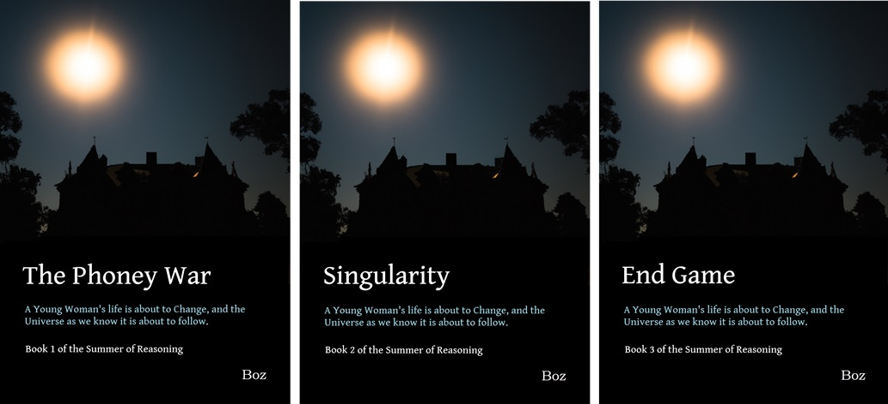

I was an early converter to e-readers with a kindle keyboard in 2010. Living in Smallville, NZ and having to pay $30+ for the latest sci-fi books (if/when the shop had them) it was a no-brainer to me and I suffered the inconvenience of not having a “real” copy. But, like no sugar in my tea, I soon found that I preferred the convenience of the e-reader over the paper copy. The newest readers weigh less than a book, have variable font-sizes (for my ageing eyes), back lights (for reading in bed or on a hike) and the batteries last a couple of good sized novels, so for me there is no going back.
However, like how I still play CD’s for old time sake, I still also read paper books, and I still check the occasional one out of the library every now and then, or find myself re-reading one of the many dusty ones still on my bookshelf. I also know there are a lot of people out there who still do not like e-books due to a variety of reasons. I can understand most of them, but the only real one for me is the fact you do not actually own any eBook you buy, that is why with my last novel I released a paperback edition.
Anyway, to the point of this post. Looking at the paperback version of that last book I had a massive wave of pride and nostalgia and sat there for maybe an hour just holding it, feeling it, smelling it and thought to myself, I really do need my first book on the bookshelf next to it. So I have finally decided to right the mistake of getting my first book “The Summer of Reasoning” into a format suitable for printing.
Unfortunately at 370,000 words, it did not lend itself well to printing as a paperback (unless I resorted to stupidly small fonts like the average bible) and so making it a single novel was a non-starter. However the book is already configured in three parts which almost works for three books. Almost, but not quite, as there is no real break in the flow between parts 2 (Singularity) and 3 (end-game) so I had to make a best guess at the best place to end the flow. It’s not perfect, but as I am expecting to be my only customer, and I will still have the US$2.99 eBook version out there I went ahead and created three paperback books of 116,000 Words, 142,000 Words and 111,000 Words.
The Summer of Reasoning Trilogy.

Amazon links to paperback book series (AU / UK / US)
Yes, they are exactly the same book, just split into the three parts and only available in paperback format. As the existing eBook already contains all three books, and is quite inexpensive already I did not really see any point in making each available as its own shorter e-book. Also they are only for sale on Amazon, but as I say I only expect me to be the customer so I can live with it for now.
As a side-note, they are not cheap to make or buy, I rounded the publishing costs up to the next .99 cents so only making about 20-70 cents on each in royalty payment. Of course Amazon will add about a 100% profit margin to this so I may try and get some author samples and send them to the local library. (if they will have them!)
Anyway, that is all this post was for, to try and put right the original wrong, and, more importantly, to give me another three physical copies I can caress indefinitely.